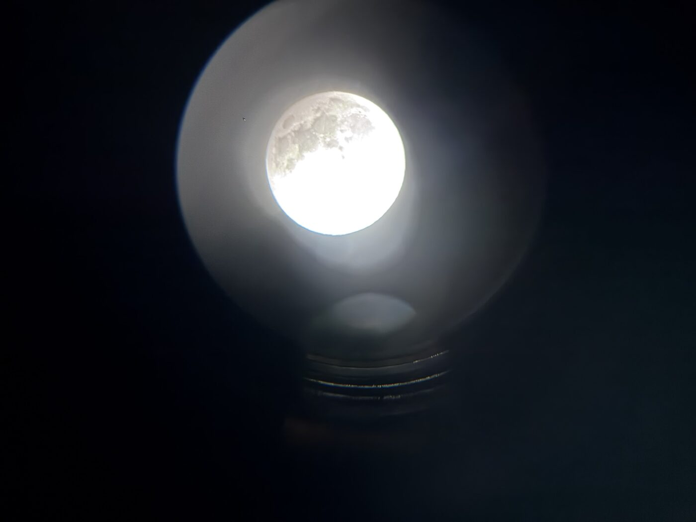
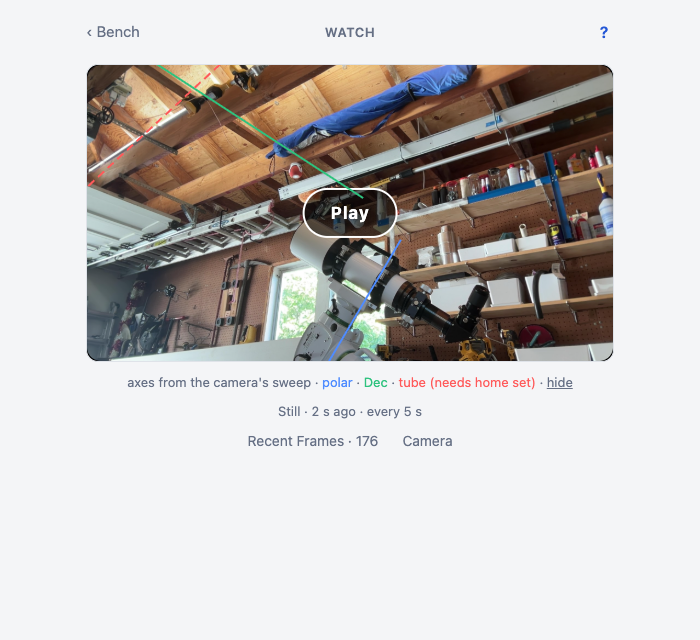
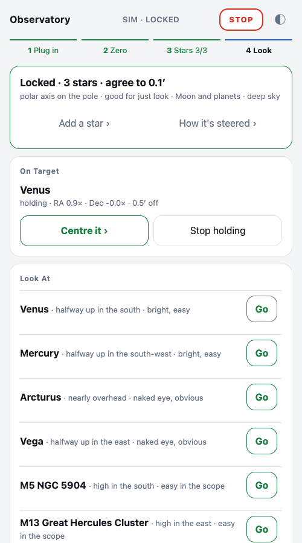
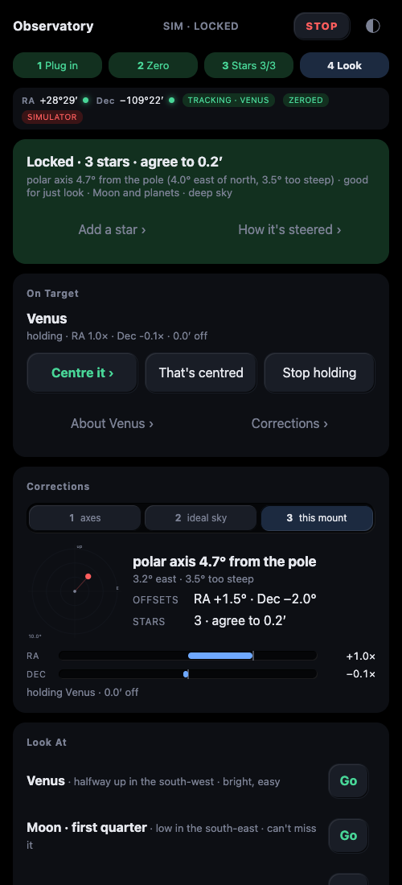
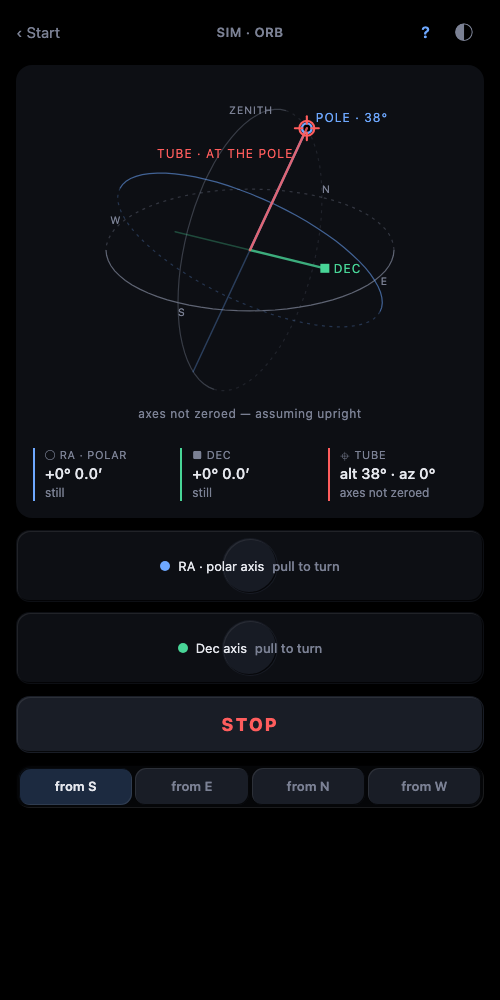

Observatory
Telescope control in Elixir: a mount driver, a Phoenix LiveView controller a phone opens, and a Nerves image for a Pi. Notes from building it.
-

Phone photos through the eyepiece, and the wrong Moon
A tripod that isn't level, a polar axis 5° off the pole, axes never zeroed, Polaris behind the house. I held my phone to the eyepiece, the photos were plate solved, and the Moon landed in the eyepiece and stayed. Then the numbers showed the software had been aiming at the wrong Moon.
-

Finding the axes with one camera
A webcam watches the mount turn a few degrees on each axis. Block-matching optical flow, a 2-D pivot fit that works, a 3-D fit that wanders 30° between sweeps, and an honest review of why. An experiment, not a calibration.
-

Observatory: a telescope you just plug in
An EQ6-R, an EQDIR cable, and a Phoenix LiveView page a phone opens. Plug in, zero, three stars, look. What got built, how tonight goes, and the three bugs that would have ruined it.
-

Star Align: a mount set down anyhow
A geometric model of a German equatorial with the polar axis anywhere, fitted from two or three stars centred by eye, and a tracker that holds a target through it on both axes. No Polaris, no level tripod.
-

The orb
The mount's geometry as a live 3-D gizmo: polar axis, Dec axis, tube, the celestial sphere, drawn server-side as SVG from the driver's 250 ms snapshot. Why it exists and how it's made without JavaScript.